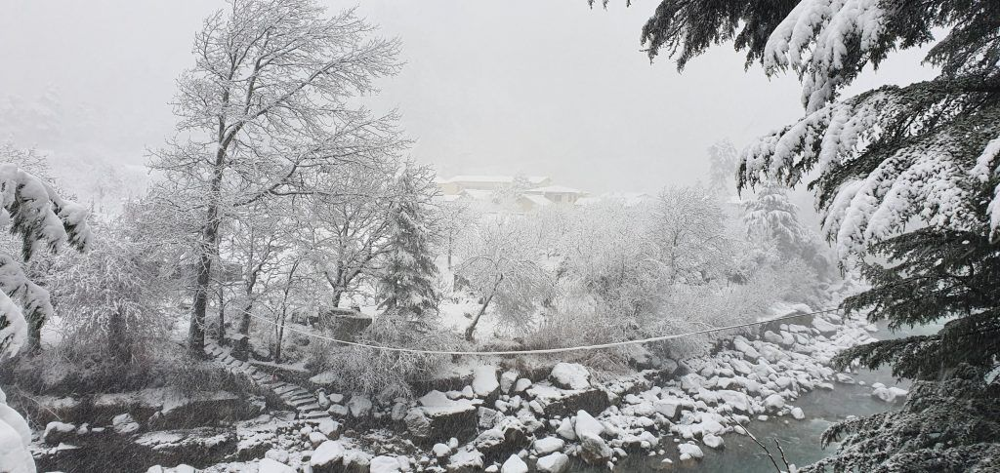
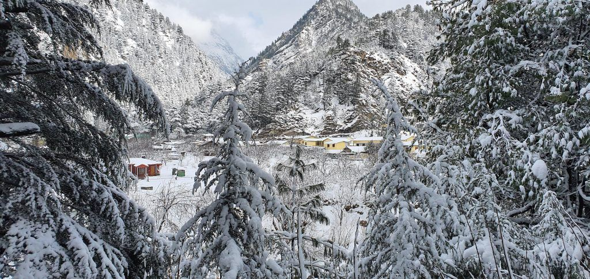
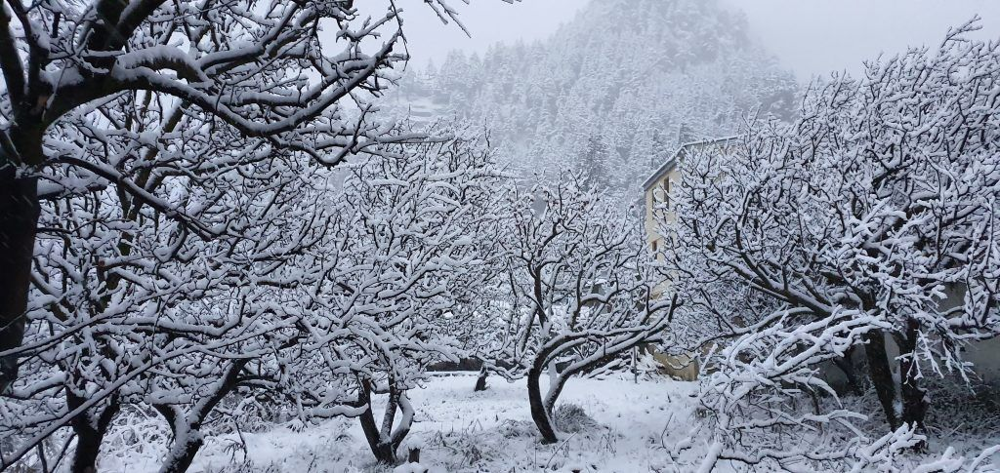
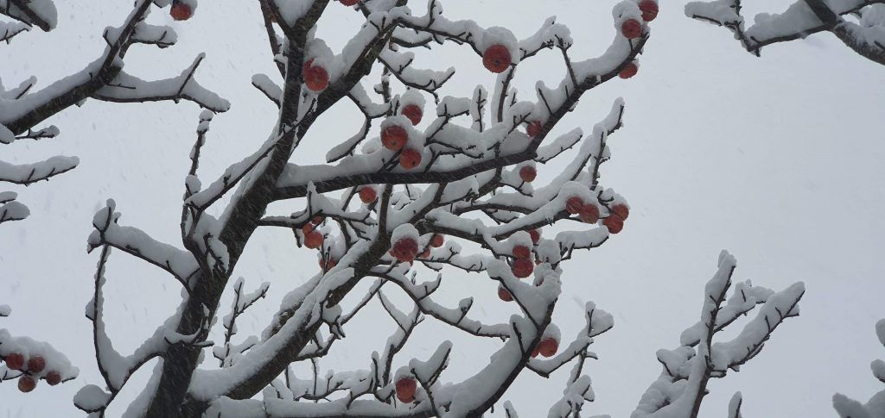
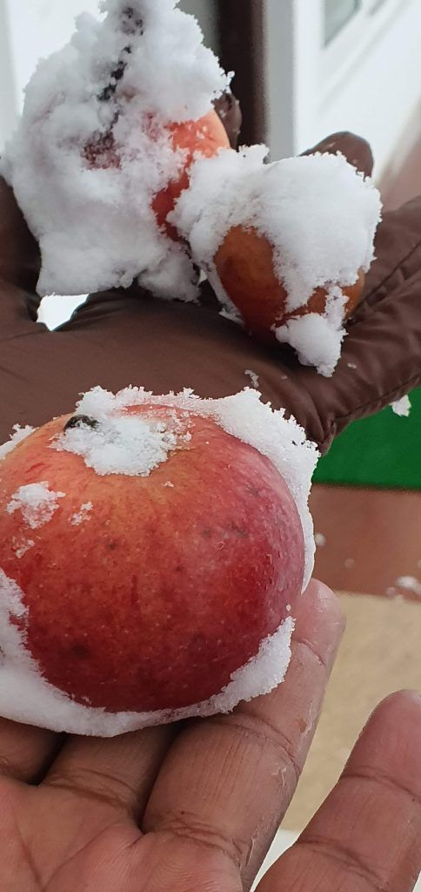
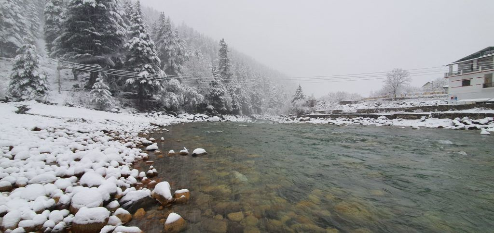
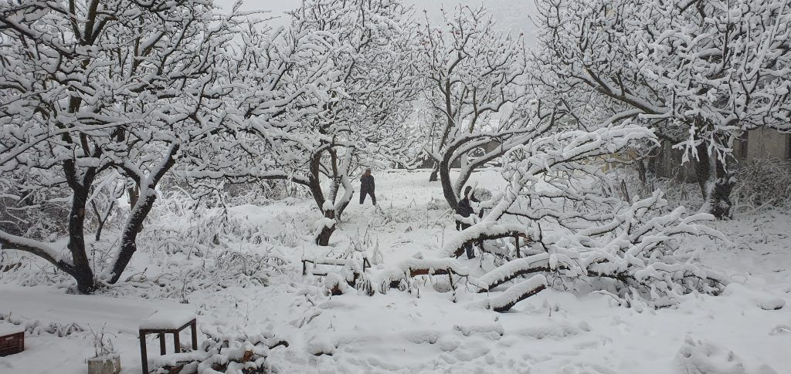
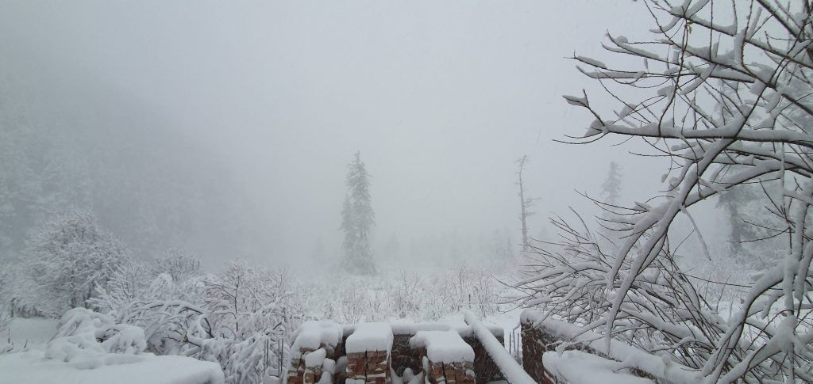
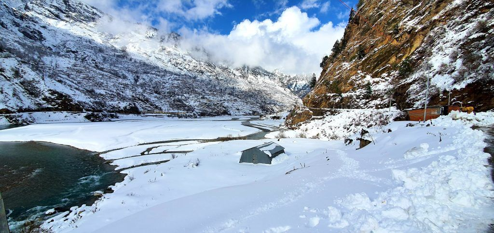

Written after our trip, in November 2020. Prices, visa rules and opening times may have changed since, so please check before you book.
It is holiday time and most of you will be busy planning a winter vacation. If snow laden mountains excite you, then plan for this unexplored beautiful snow valley destination in India. I am talking about Harsil Valley in Uttarakhand and I am sure it will take your breath away!!!
If you have not visited it yet, then this should definitely be on your bucket list.
This article gives all the details to plan you next trip to Harsil Valley.
Table of Contents
Location
Located near Gangotri Dham and Bhagirathi river in Garhwal hills of Uttarakhand – India, Harsil Valley is situated at an altitude of 2745 mts from sea level.

How to Reach
- Nearest airport - Dehradun Jolly Grant
- Nearest Railway - Rishikesh
- Nearest Bus Terminal – Rishikesh
From Rishikesh
- Private car => Rishikesh - Uttarkashi - Harshil Valley
- Bus => Rishikesh - take bus to Uttarkashi - Change bus to Gangotri (drop down at Harshil Valley)
Travel Duration
- 10 hours from Rishikesh in Car.
- 2 – 3 days stay is sufficient to explore everything in Harsil Valley. Hence, this becomes an ideal destination for long weekends.

When to Go
Harsil weather allows both summer and winter travel. Harsil temperature is in the rage of 10 to 20 degree celsius in summers. But in winters, Harsil temperature falls upto -10 degree celsius. Hence, depending on the weather and temperature which suits you, Harsil Valley trip can be planned during these months:
- Summer Timing: April to July – Temperature ranges between 10 – 20 Celsuis
- Winter Timing: October to February – Temperature ranges between 0 to -10 Celsius
- Peak Tourist Season: May/June and Sep/Oct

Stay Options
Since Harsil Valley is situated in hills and is relatively unexplored, do not expect luxurious hotels. You will get hotels or homestays with basic facilities.
During tourist season, booking can be done via travel portals. However in non-peak season, you can either get a room directly in Harsil Valley or do advance booking on GMVN website.
Adventure enthusiasts can also opt for camping with sleeping bags.
Note – Foreigners cannot do night stay in Harsil.
Things to do in Harsil Valley
- Try apples - they are natural, fresh and very sweet
- Trekking
- Bird Watching
- Nature’s Photography
- Experiencing snowfall (in winters)


Nearby Attractions
- Gangnani
- Gangotri
- Gaumukh
- Dayara Bugyal
- Dodital


Food Options
Both veg and non-veg food are easily available. However, finding pure veg / Jain food restaurants will be difficult.
Also, note that food options are limited majorly to fruits/vegetables in veg and chicken/mutton in non-veg. Do not expect exotic cuisines or junk food options.
What to Carry
During winters, there is lots of snowfall in Harsil Valley. This leads to cars slipping / getting stuck in ice. Hence, remember to carry Tyre Chains, Rope, Shovel, gloves and a small blanket with you. Snowfall may also cause power outage. So it is good idea to keep power banks, emergency lights, matchbox and candles.
Apart from these, warm clothes are a must for all season.

Similar Article => Travel Guide to Pattaya (Thailand)
Tips
- In winters, prefer to stay in Sukkhi Top instead of Harsil Valley. You may get stuck in Harsil during snowfall
- Jio and BSNL have decent mobile networks. So if you are on other network, think of this trip as a way to stay away from mobile :)

Road Condition
Road is pretty decent during summer and winter season. However, during monsoons, the roads become bad.
Video Review
We have also done a detailed video review of this place. You can find it on our channel - Veg Stroller - on youtube.